2127C20 pipe frompump to hydraulic speed selection actuator unit - r r
- Path
- Procedures > 21 GEARBOX > 2127 ELECTRO-HYDRAULIC SELECTION. GEARBOX EXTERNAL. CONTROLS > 2127C hydraulic gear selection system > 2127C20 pipe frompump to hydraulic speed selection actuator unit - r r
- Kind
- repair procedure (removal / refitting; the operation number is the code)
- Applies to
- engines: 2.0 TS, 3.2 V6; all production periods
- Interactive page
- https://sloeber94.github.io/elrnDB-a147/en/#/3025148
Applies to: engines: 2.0 TS; all production periods; only with equipment: Cambio robotizzato
 Removing
Removing
 Refitting
RefittingPosition the vehicle on the ramp.
Connect the Examiner diagnostic equipment.
Keep the brake pedal depressed.
Select 'Alfa Selespeed' on the Examiner.
Select 'Control Unit Test' on the Examiner and select 'Marelli Selespeed Automatic Transmission'.
Press 'Active Diagnosis' on the Examiner and select 'Accumulator depressurizing'.
Follow the procedure on the Examiner.
Proceed with the removal 5530B10 battery - r+r .
Proceed with the removal 5530B52 Battery DRIP TRAY/SUPPORT - R.R. .
Proceed with the removal 4450B12 front or rear wheels (two) - r+r .
Proceed with the removal 7055B42 Additional FRONT WHEEL ARCH (one), left or right - R.R. (Right and left sides).
Proceed with the removal 7055B54 under-engine guard - r r .
Proceed with the removal 7210E10 R.R. CENTRE PILLAR .
Undo the electro-hydraulic gear selection hydraulic circuit fluid reservoir cap and drain the reservoir using a suitable syringe.
1. Undo the connector (1a) and disconnect the pipe between the hydraulic circuit fluid reservoir and the electro-hydraulic gear selection electric pump (1b), electric pump side.
2. Release the pipe between the electric pump and the electro-hydraulic gear selection hydraulic unit from the fastening on the support.
3. Undo the connector (3a) and disconnect the pipe from the electric pump to the electro-hydraulic gear selection hydraulic unit (3b), electric pump side.
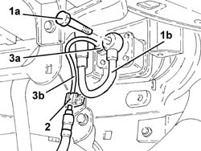
Applies to: engines: 2.0 TS; all production periods; only with equipment: Cambio robotizzato
1. Release the pipe between the electric pump and the electro-hydraulic gear selection hydraulic unit from the fastening on the bodyshell side panel.
2. Undo the connector (2a) and remove the pipe from the electric pump to the electro-hydraulic gear selector hydraulic unit (2b).
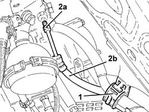
Applies to: engines: 2.0 TS; all production periods; only with equipment: Cambio robotizzato
Refitting
Removing1. Place the pipe between the electric pump and the electro-hydraulic gear selection hydraulic unit (1a) back in its housing and tihten the connector (1b) to the recommended torque.
 | Fastening | Component | Ø | Value (daNm) |
|---|---|---|---|---|
1b | - | - | - | - |
2. Secure the pipe from the electric pump to the electro-hydraulic gear selection hydraulic unit to the fastening on the bodyshell side panel.
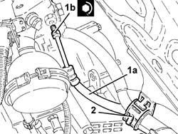
Applies to: engines: 2.0 TS; all production periods; only with equipment: Cambio robotizzato
1. Connect the pipe between the electric pump and the electro-hydraulic gear selection hydraulic unit (1a), electric pump side and tighten the connector (1b) to the recommended torque.
| Fastening | Component | Ø | Value (daNm) |
|---|---|---|---|---|
1b | - | - | - | - |
2. Secure the pipe from the electric pump to the electro-hydraulic gaer selection hydraulic unit to the fastening on the support.
3. Connect the pipe from the hydraulic circuit fluid reservoir to the electro-hydraulic gear selection electric pump (3a), electric pump side and tighten the connector (3b) to the recommended torque.
| Fastening | Component | Ø | Value (daNm) |
|---|---|---|---|---|
3b | - | - | - | - |
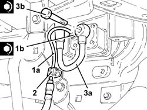
Applies to: engines: 2.0 TS; all production periods; only with equipment: Cambio robotizzato
Check the level of the fluid in the electro-hydraulic gear selection hydraulic system and top it up, if necessary 2127C04 ELECTROHYDRAULIC selection gearbox hydraulic system FLUID - Check level and top up if necessary. .
Bleed the air from the electro-hydraulic gear selection hydraulic system 2127C06 Electro-hydraulic selection manual gearbox HYDRAULIC SYSTEM - Bleeding air .
Proceed with the refitting 7210E10 R.R. CENTRE PILLAR .
Proceed with the refitting 7055B54 under-engine guard - r r .
Proceed with the refitting 7055B42 Additional FRONT WHEEL ARCH (one), left or right - R.R. (Right and left sides).
Proceed with the refitting 4450B12 front or rear wheels (two) - r+r .
Proceed with the refitting 5530B52 Battery DRIP TRAY/SUPPORT - R.R. .
Proceed with the refitting 5530B10 battery - r+r .
Remove the car from the ramp.
Applies to: engines: 3.2 V6; all production periods; only with equipment: Cambio robotizzato
Removing
RefittingPosition the vehicle on the ramp
Connect the Examiner diagnostic equipment.
Keep the brake pedal depressed.
Select 'Alfa 147 speed' on the Examiner.
Select 'Control Unit Test' on the Examiner and select the 'Marelli Selespeed Automatic Transmission'.
Press 'Active Diagnosis' on the Examiner and select 'Accumulator depressurizing'.
Continue with the procedure on the Examiner.
Proceed with removal 5530B10 battery - r+r .
Proceed with removal 5530B52 Battery DRIP TRAY/SUPPORT - R.R. .
1. Disconnect the breather pipe from the electro-hydraulic selection gearbox hydraulic circuit fluid reservoir cap.
2. Undo the electro-hydraulic selection gearbox hydraulic circuit fluid reservoir cap and remove it.
Drain the electro-hydraulic selection gearbox hydraulic circuit fluid reservoir using a suitable syringe.
3. Undo the bolts (3a) and remove the protection (3b).
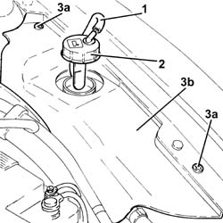
Applies to: engines: 3.2 V6; all production periods; only with equipment: Cambio robotizzato
1. Release the electrical connection for the electro-hydraulic gear selection system electric pump from the support.
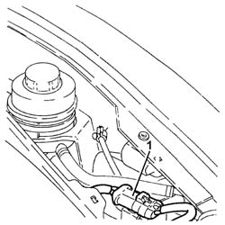
Applies to: engines: 3.2 V6; all production periods; only with equipment: Cambio robotizzato
1. Undo the connector (1a) and disconnect the pipe between the hydraulic circuit fluid reservoir and the electro-hydraulic gear selection electric pump (1b), electric pump side.
2. Disconnect the pipe between the electric pump and the electro-hydraulic gear selection hydraulic unit, electric pump side.
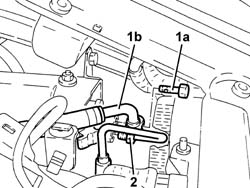
Applies to: engines: 3.2 V6; all production periods; only with equipment: Cambio robotizzato
1. Release the pipe between the electric pump and the electro-hydraulic gear selection hydraulic unit (1a) from the band (1b).
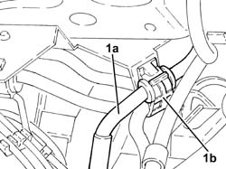
Applies to: engines: 3.2 V6; all production periods; only with equipment: Cambio robotizzato
Proceed with removal 7055B54 under-engine guard - r r .
1. Undo the nut (1a) and disconnect the battery earth lead (1b).
 | Name | Connector |
|---|---|---|
1b | Battery earth |
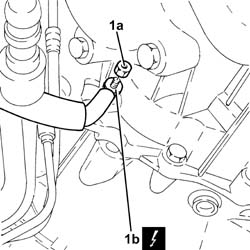
Applies to: engines: 3.2 V6; all production periods; only with equipment: Cambio robotizzato
1. Undo the connector and disconnect the pipe between the electric pump and the electro-hydraulic gear selection hydraulic unit, hydraulic unit side.
2. Remove the pipe for the electro-hydraulic selection gearbox hydraulic actuator electric pump (2a) after having released it from the fastenings (2b).
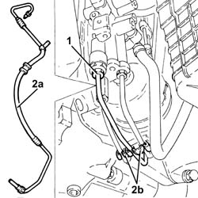
Applies to: engines: 3.2 V6; all production periods; only with equipment: Cambio robotizzato
Refitting
Removing1. Place the pipe between the electric pump and the electro-hydraulic gear selection hydraulic unit (1a) back in its housing and secure it using the bands (1b).
2. Connect the pipe between the electric pump and the electro-hydraulic gear selection hydraulic unit, hydraulic unit side and tighten the connector to the recommended torque.
| Fastening | Component | Ø | Value (daNm) |
|---|---|---|---|---|
2 | Connector | PIPE FROM PUMP/ACTUATOR UNIT | M12 | (Hydraulic actuator unit side) 1.4 ÷ 1.8 |
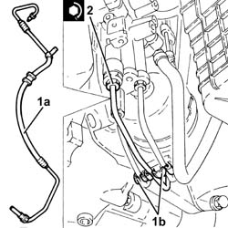
Applies to: engines: 3.2 V6; all production periods; only with equipment: Cambio robotizzato
Connect the battery earth lead and tighten the nut.
Fix the pipe between the electric pump and the electro-hydraulic gear selection hydraulic unit using the band.
1. Connect the pipe between the electric pump and the electro-hydraulic gear selection hydraulic unit (1a), electric pump side and tighten the connector (1b) to the recommended torque.
| Fastening | Component | Ø | Value (daNm) |
|---|---|---|---|---|
1b | Connector | PIPE FROM PUMP/ACTUATOR UNIT | M12 | (Electric pump side) 1.4 ÷ 1.8 |
2. Connect the pipe between the hydraulic circuit fluid reservoir and the electro-hydraulic gear selection electric pump (2a), electric pump side, and tighten the connector (2b) to the recommended torque.
| Fastening | Component | Ø | Value (daNm) |
|---|---|---|---|---|
2b | Connector | PIPE FROM RESERVOIR TO PUMP | M12 | (Electric pump side) 1.4 ÷ 1.8 |
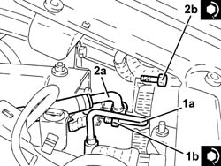
Applies to: engines: 3.2 V6; all production periods; only with equipment: Cambio robotizzato
Fix the electrical connection for the electro-hydraulic gear selection system electric pump to the mounting.
Place the protection back in its housing and secure it using the bolt.
Place the electro-hydraulic selection gearbox hydraulic circuit fluid reservoir cap back in its housing.
Connect the breather pipe to the electro-hydraulic selection gearbox hydraulic circuit fluid reservoir cap.
.Proceed with refitting 0010T47 hydraulic system fluid for gearbox with hydraulic selection check level and top up if necessary .
.Proceed with refitting 0010T48 hydraulic system for gearbox with hydraulic selection bleed air .
.Proceed with refitting 5530B52 Battery DRIP TRAY/SUPPORT - R.R. .
.Proceed with refitting 5530B10 battery - r+r .
.Proceed with refitting 7055B54 under-engine guard - r r .
Remove the car from the ramps.
Topics linked from this page (11)
- 0010T47 hydraulic system fluid for gearbox with hydraulic selection check level and top up if necessary
- 0010T48 hydraulic system for gearbox with hydraulic selection bleed air
- 2127C04 ELECTROHYDRAULIC selection gearbox hydraulic system FLUID - Check level and top up if necessary.
- 2127C06 Electro-hydraulic selection manual gearbox HYDRAULIC SYSTEM - Bleeding air
- 4450B12 front or rear wheels (two) - r+r
- 5530B10 battery - r+r
- 5530B52 Battery DRIP TRAY/SUPPORT - R.R.
- 7055B42 Additional FRONT WHEEL ARCH (one), left or right - R.R.
- 7055B54 under-engine guard - r r
- 7210E10 R.R. CENTRE PILLAR
- C1 Battery earth